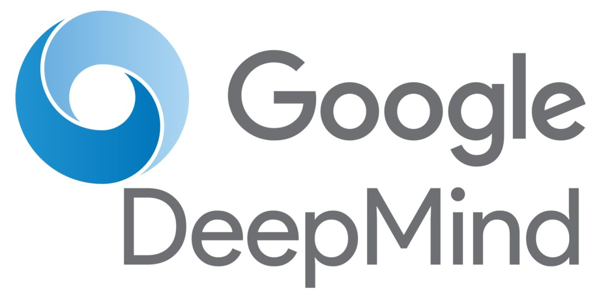
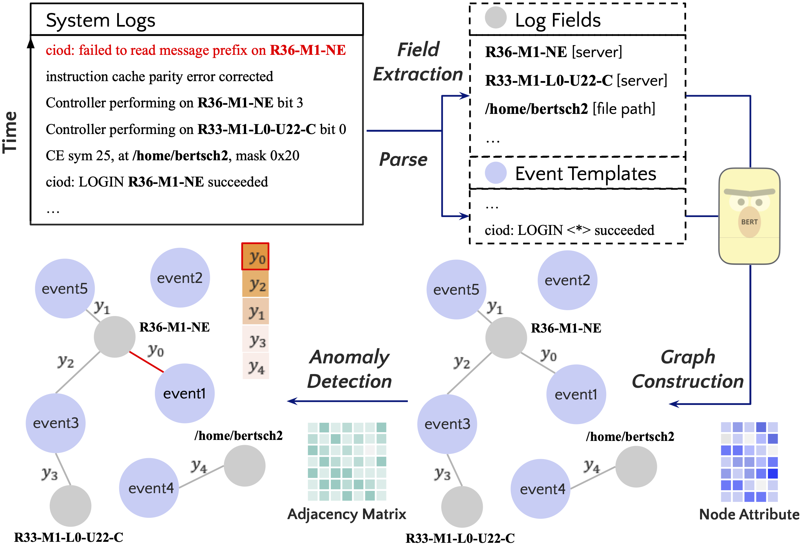

|
I am a Ph.D. candidate in Electrical Engineering at University of California, Riverside (UCR).
I conduct research at large language models (LLMs), natural language processing/generation (NLP/NLG), and machine learning systems (MLSys).
Specifically, I'm interested in post-training alignment (e.g., parameter-efficient fine-tuning, RL), uncertainty and reliability estimation, as well as resource-efficient LLM serving systems.
Email
| CV
| Google Scholar
| GitHub
| LinkedIn
| Twitter
|
Education
Ph.D.
|
University of California, Riverside (UCR), Electrical and Computer Engineering, U.S.
Advisor: Cong Liu
Sep 2022 - now
|

|
M.S.
|
University of California, San Diego (UCSD), Electrical and Computer Engineering, U.S.
Sep 2018 - Jun 2020
|

|
B.S.
|
Xi'an Jiaotong University (XJTU), Mechanical Engineering, China
Sep 2014 - Jun 2018
|

|
|
Publications (* denotes equal contribution)
|
Safety Alignment in NLP Tasks: Weakly Aligned Summarization as an In-Context Attack
Yu Fu, Yufei Li, Wen Xiao, Cong Liu, Yue Dong
ACL 2024 [pdf][code]
|
|
Distantly-Supervised Joint Extraction with Noise-Robust Learning
Yufei Li, Xiao Yu, Yanghong Guo, Yanchi Liu, Haifeng Chen, Cong Liu
Findings of ACL 2024 [pdf][code]
|
|
GLAD: Content-Aware Dynamic Graphs For Log Anomaly Detection
Yufei Li, Yanchi Liu, Haoyu Wang, Zhengzhang Chen, Wei Cheng, Yuncong Chen, Wenchao Yu, Haifeng Chen, Cong Liu
ICKG 2023 [pdf][code]
|
|
RT-LM: Uncertainty-Aware Resource Management for Real-Time Inference of Language Models
Yufei Li, Zexin Li, Wei Yang, Cong Liu
RTSS 2023 [pdf]
|
|
R^3: On-device Real-Time Deep Reinforcement Learning for Autonomous Robotics
Zexin Li, Aritra Samanta, Yufei Li, Andrea Soltoggio, Hyoseung Kim, Cong Liu
RTSS 2023 [pdf]
|
|
PIMbot: Policy and Incentive Manipulation for Multi-Robot Reinforcement Learning in Social Dilemmas
Shahab Nikkhoo, Zexin Li, Aritra Samanta, Yufei Li, Cong Liu
IROS 2023 [pdf]
|
|
Uncertainty-Aware Bootstrap Learning for Joint Extraction on Distantly-Supervised Data
Yufei Li, Xiao Yu, Yanchi Liu, Haifeng Chen, Cong Liu
ACL 2023 [pdf][code]
|
|
White-Box Multi-Objective Adversarial Attack on Dialogue Generation
Yufei Li, Zexin Li, Yingfan Gao, Cong Liu
ACL 2023 [pdf][code]
|
|
SHARE: a System for Hierarchical Assistive Recipe Editing
Shuyang Li, Yufei Li, Jianmo Ni, Julian McAuley
EMNLP 2022 [pdf][code]
|
|
GLIB: Towards Automated Test Oracle for Graphically-Rich Applications
Ke Chen*, Yufei Li*, Yingfeng Chen, Changjie Fan, Zhipeng Hu, Wei Yang
ESEC/FSE 2021 [pdf][code]
|
|
Work Experience
Google DeepMind, Mountain View, CA, U.S.
Research Intern • Jun 2024 - Sep 2024
Generated a large-scale synthetic rewrite benchmark using LLM with hand-crafted prompts
Instruction-tuned (SFT) a model on the rewrite benchmark, and distilled reward models from LLM preferences
RLHF using the decoupled reward models (PPO), targeting instruction agreement, rewrite coherence, and surgical difference with the original response
Evaluated rewrite quality through prompting AutoRaters (e.g., Gemini, Bard)
|

|
NEC Laboratories America, Inc., Princeton, NJ, U.S.
Research Intern • May 2022 - Aug 2022
Annotated named entities for few-shot prompt-based field extraction from log messages
Defined hierarchical relations between log components and configured dynamic attributed graphs
Detected anomalies in log messages using a GNN-based encoder enhanced with temporal-attentive transformers
|


|
NEC Laboratories America, Inc., Princeton, NJ, U.S.
Research Intern • May 2021 - Aug 2021
Annotated name entities and relations using regular expressions in CVE corpus for distant supervision
Incorporated pre-trained GPT-2 into a sequence labeling framework for information extraction (IE)
Proposed a bootstrap training strategy for denoising distant labels and selecting high-quality instances
|
|
The University of Texas at Dallas (UTD), Dallas, TX, U.S.
Research Assistant • Aug 2020 - May 2022
Work @ Dr. Wei Yang's Lab, doing research on NLP and software engineering.
|

|
SeekTruth Scientific and Technical Corporation, Beijing, China
Research Intern • Jul 2019 - Sep 2019
Built a joint key point and pose recognition model for character identification tasks
Developed an adaptive discrimination definition mode from Caffe to TensorFlow
Designed a lightweight CNN to calibrate video frame orientations in real-time for online streaming
|

|
|
Projects

|
Content-aware Dynamic Graphs for Log Anomaly Detection [code]
NLP & Data Mining • May 2022 - Feb 2023
Configured dynamic attributed graphs by identifying log components and their hierarchical relationships
Proposed a GNN-based temporal-attentive transformer for detecting anomalous edges in dynamic graphs
|

|
GAET: Assessing the Reusability of Pre-trained Code Embeddings [code]
NLP & SE • Sep 2020 - May 2021
Developed a cost-efficient offline framework to assess the generalizability of embeddings in code analysis tasks
Evaluated the generalizability of existing pre-trained embeddings leveraging semantic metamorphic relationships
|

|
Rethink Negative Sampling in Bayesian Personalized Ranking [code]
Recommender Systems • Nov 2019 - Jun 2020
Identified a limitation of popularity-based sampling due to non-uniform negative sampling biases
Rectified biases by creating tailored negative sampling distributions to boost Bayesian personalized ranking
|

|
Automatic Delivery Vehicle Design [code]
Algorithm • Mar 2019 - Jun 2019
Simulated a project integrating the Courier and TSP challenges for autonomous delivery vehicle design
Formulated a path planning algorithm by incorporating the A* heuristic rules with genetic evolution principles
|
|
Honors & Awards
VEX Robotics International Competitions
Excellent Award and Runner-Up at the VEX Robotics World Championship 2017, Louisville, KY, U.S.
Excellent Award and Runner-Up at the VEX Robotics Asia Open 2016, Beijing, China
First-class Award at the VEX Robotics China Open 2016, Xi'an, China
|

|
Scholarship Awards
National Encouragement Scholarship 2015-2017
|
|
|
Area Chair & Reviewer
Area chair ACL 2024, NAACL 2024
Reviewer EMNLP 2023, KDD 2023, CIKM 2022, RTSS 2023, ICSE 2022
|
|
|